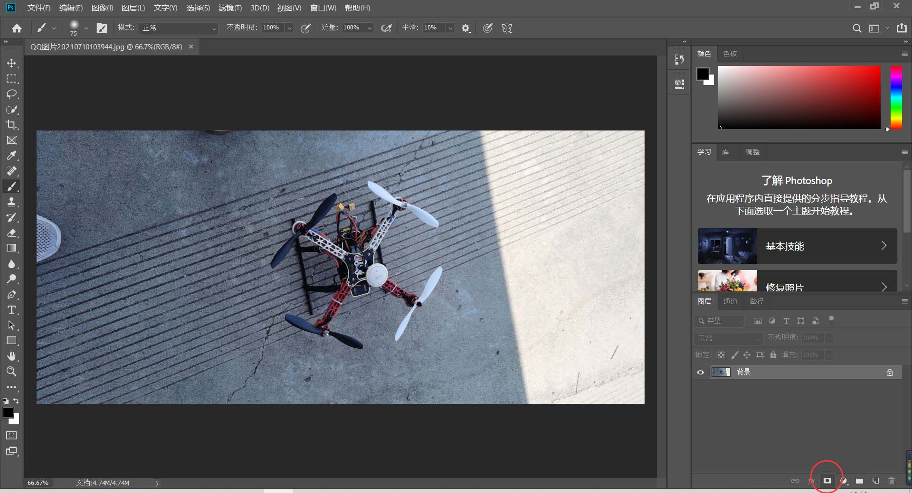
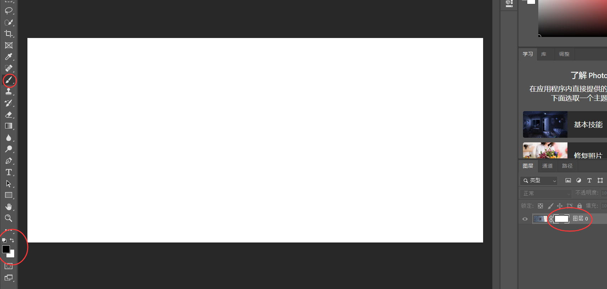

Adobe Photoshop
Adobe Photoshop介绍
1.简介
Adobe Photoshop，简称“PS”，是由Adobe Systems开发和发行的图像处理软件。
Photoshop主要处理以像素所构成的数字图像。使用其众多的编修与绘图工具，可以有效地进行图片编辑工作。ps有很多功能，在图像、图形、文字、视频、出版等各方面都有涉及。
Adobe支持Windows操作系统 、Android与Mac OS， 但Linux操作系统用户可以通过使用Wine来运行Photoshop。
2.PS有哪些强大功能？
专业测评: Photoshop的专长在于图像处理，而不是图形创作。图像处理是对已有的位图图像进行编辑加工处理以及运用一些特殊效果，其重点在于对图像的处理加工；图形创作软件是按照自己的构思创意，使用矢量图形等来设计图形。
平面设计: 平面设计是Photoshop应用最为广泛的领域，无论是图书封面，还是招帖、海报，这些平面印刷品通常都需要Photoshop软件对图像进行处理。
广告摄影: 广告摄影作为一种对视觉要求非常严格的工作，其最终成品往往要经过Photoshop的修改才能得到满意的效果。
影像创意: 影像创意是Photoshop的特长，通过Photoshop的处理 可以将不同的对象组合在一起，使图像发生变化。
网页制作: 网络的普及是促使更多人需要掌握Photoshop，因为在制作网页时Photoshop是必不可少的网页图像处理软件。
后期修饰: 在制作建筑效果图包括许三维场景时，人物与配景包括场景的颜色常常需要在Photoshop中增加并调整。
视觉创意: 视觉创意与设计是设计艺术的一个分支，此类设计通常没有非常明显的商业目的，但由于他为广大设计爱好者提供了广阔的设计空间，因此越来越多的设计爱好者开始学习Photoshop，并进行具有个人特色与风格的视觉创意。
…………
Adobe Photoshop简明教程
由于PS的功能十分丰富而且特别强大，这里只提一些常用的知识或功能。更多强大功能需要我们自己去慢慢探索。
1.认识PS界面
在打开PS后，首先可以导入一张自己想要ps的图片，或者可以新建一个空白的图片用来创作。
如图，在进入PS主界面后可以看到整体分为了这几个板块，其中工具栏用来选择工具创作图片，菜单栏有更多丰富的选项，用来辅助图片创作或导出图片。
在文档窗口相当于画板，用来操作创作图片，面板模块则可以进行图片整体的设计或布局等。
2.图层
图层指的是PS中可以叠加起来的图像单元。PS的每个作品都会有图层，并且可能会有很多的图层，我们看到的一个非常经典的设计图，实际是很多图层组成的，所以学好图层是学好PS的基础。
如图，这个画面就是由3个图层组成的，其中上面的图层会遮挡住下面的图层。在PS中，文字也是一种图层。可以通过将其他图片拖入该编辑页面中添加新的图层，也可以自己创建新的图层，如下图所示。
3.选区
选区是PS中一个十分重要的内容，选区内的像素可以被编辑，可以被移动，选区外的像素则是被保护的，不可编辑。在图层上表现为蚂蚁线组成的闭合线框。如下图。
建立选区之后，可以对选区内的图像复制、剪切、移动、删除、填充、调色、添加滤镜等操作。常常应用于将部分图像分离到不同图层上，方便进行图层化的操作。
其中选区可以用以下几种方式创立：
选区建立后，便可以单独对选区进行操作，也可以对选区进行自由变换（快捷键Ctrl+T），如下图为单独拖动选区。
如果想要进行抠图，可以使用魔棒，然后用其他工具调整选区为要扣的内容，然后选区之外的内容删除掉，只留下选区的内容。
操作选区之外的内容，可以按快捷键Ctrl+Shift+I。如果想要取消对选区的操作，可以按快捷键Ctrl+D。
4.蒙版
蒙版相当于一层被子，可以将画面盖住一些内容，也可以将图像的某部分分离开来，保护图像的某部分不被编辑。蒙版在PS里的应用相当广泛，蒙版最大的特点就是可以反复修改，却不会影响到本身图层的任何构造。
在PS中，蒙版是灰度的，是将不同灰度色值转化为不同的透明度，并作用到它所在的图层，使图层不同部位透明度产生相应的变化。黑色为完全透明，白色为完全不透明。

如图，可以点击右下角的圈住的图标在该图层上创建一个蒙版。

如图，选择图片右边的蒙版，按住Alt键，然后点击蒙版，即可跳转到蒙版节目。在工具栏中选择画笔，将前景色调为黑色，背景色调为白色，用黑色画笔在蒙版上涂画几笔，然后点击图像切换到图像界面。
可以看到，刚才在蒙版上涂成黑色的地方在图像界面上已被完全盖住（擦除）。
5.钢笔工具
钢笔工具是PS中最强大的工具之一。由于它难度较大，在PS中使用不是那么频繁，但是在许多情况下又不得不使用钢笔工具。它也是PS小白成为大神的必经之路。
钢笔工具可以用来绘制矢量图形，可以用来创建选区和抠图，甚至在Pr和AE中也可以看到钢笔工具的身影。
选择钢笔工具：
画直线：只需点击一处添加一个锚点，再点击另外一处添加另一个锚点，两点自动连成一条直线
画曲线：先点击一处作为曲线的起点，再长按曲线的终点，移动鼠标即可出现曲线的弧线。
tips：点击已画好的曲线或直线中间可以添加新的锚点。按住ctrl键拖动锚点可以改变锚点的位置，按住alt键拖动锚点可以改变锚点之间的弧线。
钢笔工具还有更多的功能和应用，需要我们去慢慢练习。
6.导出图片
在PS中，有3种导出图片方法：存储、存储为、和导出。
其中最常用的是存储为，可以用此来指定图片格式和保存的路径以及调整图片的参数（其中psd格式是Photoshop专用的可编辑格式），存储则默认存储到图片原先的位置，
在导出选项中可以选择更多的选项来导出图片。
当然，PS还可以在图像中裁剪图片，可以使用历史记录和历史记录画笔来更灵活的创作，并且具有极高的容错率，甚至可以使用PS来处理动画等。
Adobe Photoshop展示
下面为一些用ps做出的效果：